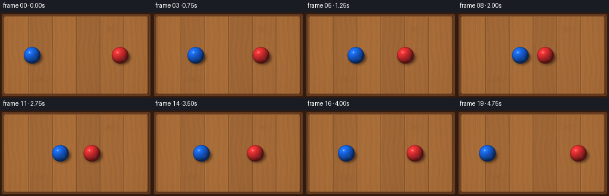
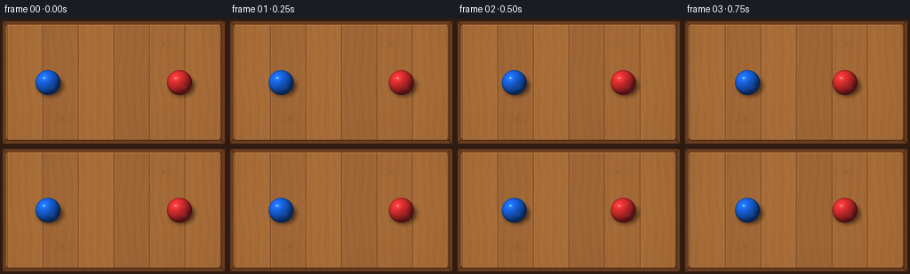
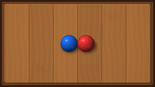

CODING AGENTS AS PIXEL WORLD MODELS
traex/GPT-5.6-Sol · instance_preservation_0025
点击播放 · 原生 RGB 像素
逐轮保存的候选
回放视频、检查图与代码变化。
每份候选均可单独播放。实际图片检查记录在下方工具轨迹中。
候选 01播放与检查图
点击播放 · 原生 RGB 像素


展开代码变化
--- 上一保存版本
+++ 本次保存版本
@@ -0,0 +1,198 @@
+from pathlib import Path
+import json
+import math
+import numpy as np
+from PIL import Image, ImageDraw, ImageFilter
+import artifact_io
+
+CASE_DIR = Path(__file__).resolve().parent
+SPEC = json.loads((CASE_DIR / "task_spec.json").read_text())
+W, H = int(SPEC["width"]), int(SPEC["height"])
+N = int(SPEC["frames"])
+S = 4 # supersampling for smooth spheres and table details
+RNG = np.random.default_rng(2501)
+
+
+def make_table():
+ """Warm oak tabletop seen square-on from directly overhead."""
+ w, h = W * S, H * S
+ yy, xx = np.mgrid[0:h, 0:w]
+ x = xx / S
+ y = yy / S
+
+ # Broad vertical oak boards, with deterministic tonal differences.
+ board_w = 40.0
+ board = np.floor((x - 8.0) / board_w).astype(int)
+ board_tones = np.array([7.0, -3.0, 4.0, -6.0, 2.0, 8.0, -2.0])
+ bidx = np.clip(board, 0, len(board_tones) - 1)
+ tone = board_tones[bidx]
+
+ # Long, gently meandering fibers run down the boards.
+ local_x = np.mod(x - 8.0, board_w)
+ warp = local_x + 1.9 * np.sin(y * 0.046 + board * 1.4) + 0.75 * np.sin(y * 0.12)
+ grain = (2.7 * np.sin(warp * 0.72 + np.sin(y * 0.035)) +
+ 1.5 * np.sin(warp * 1.67 + y * 0.017) +
+ 0.8 * np.sin(warp * 3.1 - y * 0.025))
+ # Soft overhead illumination and restrained vignette.
+ light = 8.0 - 0.00062 * ((x - 116.0) ** 2 + 0.8 * (y - 59.0) ** 2)
+ base = np.empty((h, w, 3), dtype=np.float32)
+ base[..., 0] = 157 + tone + grain + light
+ base[..., 1] = 101 + 0.72 * tone + 0.55 * grain + 0.72 * light
+ base[..., 2] = 53 + 0.30 * tone + 0.22 * grain + 0.40 * light
+
+ # Fine natural texture, fixed across every frame.
+ coarse = RNG.normal(0, 1, (H, W)).astype(np.float32)
+ coarse = np.asarray(Image.fromarray(coarse, mode="F").resize((w, h), Image.Resampling.BICUBIC))
+ fine = RNG.normal(0, 0.65, (h, w)).astype(np.float32)
+ noise = coarse * 1.05 + fine
+ base[..., 0] += noise
+ base[..., 1] += noise * 0.70
+ base[..., 2] += noise * 0.38
+ im = Image.fromarray(np.uint8(np.clip(base, 0, 255)), "RGB")
+ d = ImageDraw.Draw(im, "RGBA")
+
+ # Plank joins: a recessed line plus a slim light lip.
+ for sx in [8, 48, 88, 128, 168, 208, 248]:
+ X = int(sx * S)
+ d.line([(X, 7*S), (X, 137*S)], fill=(64, 34, 17, 105), width=max(1, S))
+ d.line([(X+S, 7*S), (X+S, 137*S)], fill=(238, 184, 104, 40), width=max(1, S//2))
+
+ # A few subtle flowing dark fibers, each tied to the wood rather than motion.
+ for k in range(22):
+ bx = 11 + (k * 19.7) % 233
+ phase = 0.47 * k
+ pts = []
+ for py in np.linspace(9, 135, 45):
+ px = bx + 0.72 * math.sin(py * 0.061 + phase) + 0.24 * math.sin(py * 0.19 + phase)
+ pts.append((int(px*S), int(py*S)))
+ alpha = 17 + (k % 3) * 4
+ d.line(pts, fill=(73, 39, 19, alpha), width=max(1, S//2))
+
+ # Two understated wood knots with concentric grain contours.
+ for kx, ky, rw in [(70, 113, 8), (184, 29, 6)]:
+ for q in range(4):
+ rx = (rw + q * 3.4) * S
+ ry = (2.0 + q * 1.2) * S
+ box = [kx*S-rx, ky*S-ry, kx*S+rx, ky*S+ry]
+ d.ellipse(box, outline=(70, 35, 17, 20 - q*2), width=max(1, S//2))
+ d.ellipse([(kx-2.1)*S, (ky-1.15)*S, (kx+2.1)*S, (ky+1.15)*S], fill=(82, 43, 20, 34))
+
+ # Thick wooden table rim and mitered corners reinforce the aerial rectangle.
+ outer = 0
+ inset = 7 * S
+ d.rectangle([outer, outer, w-1, h-1], outline=(48, 27, 17, 255), width=3*S)
+ d.rectangle([3*S, 3*S, w-1-3*S, h-1-3*S], outline=(103, 59, 30, 245), width=4*S)
+ d.line([(7*S, 7*S), ((W-7)*S, 7*S)], fill=(232, 164, 90, 90), width=S)
+ d.line([(7*S, 7*S), (7*S, (H-7)*S)], fill=(220, 143, 72, 65), width=S)
+ d.line([(7*S, (H-7)*S), ((W-7)*S, (H-7)*S)], fill=(43, 24, 15, 160), width=S)
+ d.line([((W-7)*S, 7*S), ((W-7)*S, (H-7)*S)], fill=(45, 25, 15, 155), width=S)
+ # Miter seams at corners.
+ for p1, p2 in [((2,2),(8,8)), ((W-3,2),(W-9,8)), ((2,H-3),(8,H-9)), ((W-3,H-3),(W-9,H-9))]:
+ d.line([(p1[0]*S,p1[1]*S),(p2[0]*S,p2[1]*S)], fill=(42,24,15,180), width=S)
+ return im
+
+
+def alpha_composite_rgb(base, rgba):
+ return Image.alpha_composite(base.convert("RGBA"), rgba)
+
+
+def draw_ball(scene, cx, cy, radius, color):
+ """Render one glossy shaded sphere and its soft contact/cast shadow."""
+ w, h = scene.size
+ # Soft shadow displaced down/right by the upper-left key light.
+ shadow = Image.new("RGBA", (w, h), (0, 0, 0, 0))
+ sd = ImageDraw.Draw(shadow)
+ sx, sy = (cx + 2.8) * S, (cy + 4.0) * S
+ rx, ry = (radius * 1.03) * S, (radius * 0.82) * S
+ sd.ellipse([sx-rx, sy-ry, sx+rx, sy+ry], fill=(25, 12, 7, 150))
+ shadow = shadow.filter(ImageFilter.GaussianBlur(2.2*S))
+ scene = alpha_composite_rgb(scene, shadow)
+
+ # Compute physically suggestive sphere illumination within a tight crop.
+ pad = 2.0
+ left = int(math.floor((cx-radius-pad)*S))
+ top = int(math.floor((cy-radius-pad)*S))
+ right = int(math.ceil((cx+radius+pad)*S))
+ bottom = int(math.ceil((cy+radius+pad)*S))
+ ph, pw = bottom-top, right-left
+ gy, gx = np.mgrid[0:ph, 0:pw]
+ px = (left + gx + 0.5) / S
+ py = (top + gy + 0.5) / S
+ nx = (px-cx)/radius
+ ny = (py-cy)/radius
+ rr = nx*nx + ny*ny
+ inside = rr <= 1.0
+ nz = np.sqrt(np.maximum(0.0, 1.0-rr))
+ # Light comes from upper left, camera is directly above.
+ lx, ly, lz = -0.43, -0.52, 0.735
+ dot = np.maximum(0.0, nx*lx + ny*ly + nz*lz)
+ diffuse = 0.39 + 0.69 * dot
+ edge = np.clip(nz * 1.75, 0.0, 1.0)
+ diffuse *= (0.80 + 0.20*edge)
+ basec = np.array(color, dtype=np.float32)
+ rgb = basec[None,None,:] * diffuse[...,None]
+ # Broad lacquer sheen and crisp highlight both remain attached to the same ball.
+ broad = np.exp(-(((nx+0.29)/0.40)**2 + ((ny+0.34)/0.34)**2)*2.0)
+ sharp = np.exp(-(((nx+0.31)/0.105)**2 + ((ny+0.36)/0.085)**2)*2.4)
+ rgb += broad[...,None] * 24.0 + sharp[...,None] * 142.0
+ # Small cool reflected rim on the lower-right.
+ bounce = np.exp(-(((nx-0.42)/0.35)**2 + ((ny-0.43)/0.28)**2)*2.2)
+ rgb += bounce[...,None] * np.array([9, 11, 17], dtype=np.float32)
+ alpha_edge = np.clip((1.015 - np.sqrt(rr)) * S * 1.15, 0, 1)
+ alpha = np.where(inside, 255.0, alpha_edge*255.0)
+ patch = np.zeros((ph,pw,4), dtype=np.uint8)
+ patch[...,:3] = np.uint8(np.clip(rgb,0,255))
+ patch[...,3] = np.uint8(np.clip(alpha,0,255))
+ layer = Image.new("RGBA", (w,h), (0,0,0,0))
+ layer.paste(Image.fromarray(patch,"RGBA"), (left,top), Image.fromarray(patch,"RGBA"))
+ scene = alpha_composite_rgb(scene, layer)
+
+ # Thin dark grounding contour, especially legible against bright wood.
+ contour = Image.new("RGBA", (w,h), (0,0,0,0))
+ cd = ImageDraw.Draw(contour)
+ box = [(cx-radius)*S,(cy-radius)*S,(cx+radius)*S,(cy+radius)*S]
+ cd.ellipse(box, outline=(16,17,24,105), width=max(1,int(0.48*S)))
+ return alpha_composite_rgb(scene, contour)
+
+
+def ball_positions(i):
+ # One-dimensional, head-on equal-mass collision. At frame 9 the balls touch;
+ # afterward their velocities reverse, making the collision unmistakable.
+ start_blue, start_red = 54.0, 202.0
+ contact_blue, contact_red = 114.0, 142.0
+ impact = 9
+ if i <= impact:
+ u = i / impact
+ # Smooth but nearly uniform approach, beginning already in motion.
+ u = 0.06*u*u + 0.94*u
+ xb = start_blue + (contact_blue-start_blue)*u
+ xr = start_red + (contact_red-start_red)*u
+ else:
+ j = i-impact
+ speed = 6.25
+ xb = contact_blue - speed*j
+ xr = contact_red + speed*j
+ return xb, xr
+
+
+def generate():
+ table = make_table()
+ frames = []
+ cy = 72.0
+ radius = 14.0
+ for i in range(N):
+ xb, xr = ball_positions(i)
+ frame = table.copy()
+ # Drawing order never changes; shadows and contours stay coherent.
+ frame = draw_ball(frame, xb, cy, radius, (24, 102, 229))
+ frame = draw_ball(frame, xr, cy, radius, (225, 47, 48))
+ # Downsample only once, preserving anti-aliased circular silhouettes.
+ frame = frame.convert("RGB").resize((W,H), Image.Resampling.LANCZOS)
+ frames.append(np.asarray(frame, dtype=np.uint8))
+ return np.stack(frames, axis=0)
+
+
+if __name__ == "__main__":
+ frames = generate()
+ artifact_io.save(frames, CASE_DIR)
+ print(f"saved {len(frames)} RGB frames at {W}x{H}")
可观测工具轨迹
实际执行的命令与返回图片。
命令 1exit 0
/bin/bash -lc "cat GENERATION_RULES.md && printf '\\n--- prompt.txt ---\\n' && cat prompt.txt"
命令 2exit 0
/bin/bash -lc "cat task_spec.json && printf '\\n--- files ---\\n' && find . -maxdepth 2 -type f -printf '%p\\n' | sort"
命令 3exit 0
/bin/bash -lc "sed -n '1,240p' artifact_io.py"
命令 4exit 0
/bin/bash -lc "cat > generate.py <<'PY'
from pathlib import Path
import json
import math
import numpy as np
from PIL import Image, ImageDraw, ImageFilter
import artifact_io
CASE_DIR = Path(__file__).resolve().parent
SPEC = json.loads((CASE_DIR / \"task_spec.json\").read_text())
W, H = int(SPEC[\"width\"]), int(SPEC[\"height\"])
N = int(SPEC[\"frames\"])
S = 4 # supersampling for smooth spheres and table details
RNG = np.random.default_rng(2501)
def make_table():
\"\"\"Warm oak tabletop seen square-on from directly overhead.\"\"\"
w, h = W * S, H * S
yy, xx = np.mgrid[0:h, 0:w]
x = xx / S
y = yy / S
# Broad vertical oak boards, with deterministic tonal differences.
board_w = 40.0
board = np.floor((x - 8.0) / board_w).astype(int)
board_tones = np.array([7.0, -3.0, 4.0, -6.0, 2.0, 8.0, -2.0])
bidx = np.clip(board, 0, len(board_tones) - 1)
tone = board_tones[bidx]
# Long, gently meandering fibers run down the boards.
local_x = np.mod(x - 8.0, board_w)
warp = local_x + 1.9 * np.sin(y * 0.046 + board * 1.4) + 0.75 * np.sin(y * 0.12)
grain = (2.7 * np.sin(warp * 0.72 + np.sin(y * 0.035)) +
1.5 * np.sin(warp * 1.67 + y * 0.017) +
0.8 * np.sin(warp * 3.1 - y * 0.025))
# Soft overhead illumination and restrained vignette.
light = 8.0 - 0.00062 * ((x - 116.0) ** 2 + 0.8 * (y - 59.0) ** 2)
base = np.empty((h, w, 3), dtype=np.float32)
base[..., 0] = 157 + tone + grain + light
base[..., 1] = 101 + 0.72 * tone + 0.55 * grain + 0.72 * light
base[..., 2] = 53 + 0.30 * tone + 0.22 * grain + 0.40 * light
# Fine natural texture, fixed across every frame.
coarse = RNG.normal(0, 1, (H, W)).astype(np.float32)
coarse = np.asarray(Image.fromarray(coarse, mode=\"F\").resize((w, h), Image.Resampling.BICUBIC))
fine = RNG.normal(0, 0.65, (h, w)).astype(np.float32)
noise = coarse * 1.05 + fine
base[..., 0] += noise
base[..., 1] += noise * 0.70
base[..., 2] += noise * 0.38
im = Image.fromarray(np.uint8(np.clip(base, 0, 255)), \"RGB\")
d = ImageDraw.Draw(im, \"RGBA\")
# Plank joins: a recessed line plus a slim light lip.
for sx in [8, 48, 88, 128, 168, 208, 248]:
X = int(sx * S)
d.line([(X, 7*S), (X, 137*S)], fill=(64, 34, 17, 105), width=max(1, S))
d.line([(X+S, 7*S), (X+S, 137*S)], fill=(238, 184, 104, 40), width=max(1, S//2))
# A few subtle flowing dark fibers, each tied to the wood rather than motion.
for k in range(22):
bx = 11 + (k * 19.7) % 233
phase = 0.47 * k
pts = []
for py in np.linspace(9, 135, 45):
px = bx + 0.72 * math.sin(py * 0.061 + phase) + 0.24 * math.sin(py * 0.19 + phase)
pts.append((int(px*S), int(py*S)))
alpha = 17 + (k % 3) * 4
d.line(pts, fill=(73, 39, 19, alpha), width=max(1, S//2))
# Two understated wood knots with concentric grain contours.
for kx, ky, rw in [(70, 113, 8), (184, 29, 6)]:
for q in range(4):
rx = (rw + q * 3.4) * S
ry = (2.0 + q * 1.2) * S
box = [kx*S-rx, ky*S-ry, kx*S+rx, ky*S+ry]
d.ellipse(box, outline=(70, 35, 17, 20 - q*2), width=max(1, S//2))
d.ellipse([(kx-2.1)*S, (ky-1.15)*S, (kx+2.1)*S, (ky+1.15)*S], fill=(82, 43, 20, 34))
# Thick wooden table rim and mitered corners reinforce the aerial rectangle.
outer = 0
inset = 7 * S
d.rectangle([outer, outer, w-1, h-1], outline=(48, 27, 17, 255), width=3*S)
d.rectangle([3*S, 3*S, w-1-3*S, h-1-3*S], outline=(103, 59, 30, 245), width=4*S)
d.line([(7*S, 7*S), ((W-7)*S, 7*S)], fill=(232, 164, 90, 90), width=S)
d.line([(7*S, 7*S), (7*S, (H-7)*S)], fill=(220, 143, 72, 65), width=S)
d.line([(7*S, (H-7)*S), ((W-7)*S, (H-7)*S)], fill=(43, 24, 15, 160), width=S)
d.line([((W-7)*S, 7*S), ((W-7)*S, (H-7)*S)], fill=(45, 25, 15, 155), width=S)
# Miter seams at corners.
for p1, p2 in [((2,2),(8,8)), ((W-3,2),(W-9,8)), ((2,H-3),(8,H-9)), ((W-3,H-3),(W-9,H-9))]:
d.line([(p1[0]*S,p1[1]*S),(p2[0]*S,p2[1]*S)], fill=(42,24,15,180), width=S)
return im
def alpha_composite_rgb(base, rgba):
return Image.alpha_composite(base.convert(\"RGBA\"), rgba)
def draw_ball(scene, cx, cy, radius, color):
\"\"\"Render one glossy shaded sphere and its soft contact/cast shadow.\"\"\"
w, h = scene.size
# Soft shadow displaced down/right by the upper-left key light.
shadow = Image.new(\"RGBA\", (w, h), (0, 0, 0, 0))
sd = ImageDraw.Draw(shadow)
sx, sy = (cx + 2.8) * S, (cy + 4.0) * S
rx, ry = (radius * 1.03) * S, (radius * 0.82) * S
sd.ellipse([sx-rx, sy-ry, sx+rx, sy+ry], fill=(25, 12, 7, 150))
shadow = shadow.filter(ImageFilter.GaussianBlur(2.2*S))
scene = alpha_composite_rgb(scene, shadow)
# Compute physically suggestive sphere illumination within a tight crop.
pad = 2.0
left = int(math.floor((cx-radius-pad)*S))
top = int(math.floor((cy-radius-pad)*S))
right = int(math.ceil((cx+radius+pad)*S))
bottom = int(math.ceil((cy+radius+pad)*S))
ph, pw = bottom-top, right-left
gy, gx = np.mgrid[0:ph, 0:pw]
px = (left + gx + 0.5) / S
py = (top + gy + 0.5) / S
nx = (px-cx)/radius
ny = (py-cy)/radius
rr = nx*nx + ny*ny
inside = rr <= 1.0
nz = np.sqrt(np.maximum(0.0, 1.0-rr))
# Light comes from upper left, camera is directly above.
lx, ly, lz = -0.43, -0.52, 0.735
dot = np.maximum(0.0, nx*lx + ny*ly + nz*lz)
diffuse = 0.39 + 0.69 * dot
edge = np.clip(nz * 1.75, 0.0, 1.0)
diffuse *= (0.80 + 0.20*edge)
basec = np.array(color, dtype=np.float32)
rgb = basec[None,None,:] * diffuse[...,None]
# Broad lacquer sheen and crisp highlight both remain attached to the same ball.
broad = np.exp(-(((nx+0.29)/0.40)**2 + ((ny+0.34)/0.34)**2)*2.0)
sharp = np.exp(-(((nx+0.31)/0.105)**2 + ((ny+0.36)/0.085)**2)*2.4)
rgb += broad[...,None] * 24.0 + sharp[...,None] * 142.0
# Small cool reflected rim on the lower-right.
bounce = np.exp(-(((nx-0.42)/0.35)**2 + ((ny-0.43)/0.28)**2)*2.2)
rgb += bounce[...,None] * np.array([9, 11, 17], dtype=np.float32)
alpha_edge = np.clip((1.015 - np.sqrt(rr)) * S * 1.15, 0, 1)
alpha = np.where(inside, 255.0, alpha_edge*255.0)
patch = np.zeros((ph,pw,4), dtype=np.uint8)
patch[...,:3] = np.uint8(np.clip(rgb,0,255))
patch[...,3] = np.uint8(np.clip(alpha,0,255))
layer = Image.new(\"RGBA\", (w,h), (0,0,0,0))
layer.paste(Image.fromarray(patch,\"RGBA\"), (left,top), Image.fromarray(patch,\"RGBA\"))
scene = alpha_composite_rgb(scene, layer)
# Thin dark grounding contour, especially legible against bright wood.
contour = Image.new(\"RGBA\", (w,h), (0,0,0,0))
cd = ImageDraw.Draw(contour)
box = [(cx-radius)*S,(cy-radius)*S,(cx+radius)*S,(cy+radius)*S]
cd.ellipse(box, outline=(16,17,24,105), width=max(1,int(0.48*S)))
return alpha_composite_rgb(scene, contour)
def ball_positions(i):
# One-dimensional, head-on equal-mass collision. At frame 9 the balls touch;
# afterward their velocities reverse, making the collision unmistakable.
start_blue, start_red = 54.0, 202.0
contact_blue, contact_red = 114.0, 142.0
impact = 9
if i <= impact:
u = i / impact
# Smooth but nearly uniform approach, beginning already in motion.
u = 0.06*u*u + 0.94*u
xb = start_blue + (contact_blue-start_blue)*u
xr = start_red + (contact_red-start_red)*u
else:
j = i-impact
speed = 6.25
xb = contact_blue - speed*j
xr = contact_red + speed*j
return xb, xr
def generate():
table = make_table()
frames = []
cy = 72.0
radius = 14.0
for i in range(N):
xb, xr = ball_positions(i)
frame = table.copy()
# Drawing order never changes; shadows and contours stay coherent.
frame = draw_ball(frame, xb, cy, radius, (24, 102, 229))
frame = draw_ball(frame, xr, cy, radius, (225, 47, 48))
# Downsample only once, preserving anti-aliased circular silhouettes.
frame = frame.convert(\"RGB\").resize((W,H), Image.Resampling.LANCZOS)
frames.append(np.asarray(frame, dtype=np.uint8))
return np.stack(frames, axis=0)
if __name__ == \"__main__\":
frames = generate()
artifact_io.save(frames, CASE_DIR)
print(f\"saved {len(frames)} RGB frames at {W}x{H}\")
PY
python generate.py
ls -lh pixels.npz index.html inspection.png frames/00.png frames/09.png frames/19.png"命令 5exit 0
/bin/bash -lc "python - <<'PY'
from pathlib import Path
import numpy as np
from PIL import Image
p=np.load('pixels.npz')['pixels']
assert p.shape == (144,256,20) and p.dtype == np.uint32
fs=np.stack([np.asarray(Image.open(f'frames/{i:02d}.png').convert('RGB')) for i in range(20)])
assert fs.shape == (20,144,256,3) and fs.dtype == np.uint8
print('shape/dtype:', fs.shape, fs.dtype)
print('unique consecutive frames:', [bool(np.any(fs[i]"'!=fs[i-1])) for i in range(1,20)])
# Detect saturated blue/red object centroids for trajectory sanity.
for name, maskfun in [('"'blue',lambda f:(f[:,:,2]>f[:,:,0]*1.35)&(f[:,:,2]>100)),('red',lambda f:(f[:,:,0]>f[:,:,2]*1.5)&(f[:,:,0]>120))]:
xs=[]
for f in fs:
y,x=np.nonzero(maskfun(f)); xs.append(round(float(x.mean()),1))
print(name,'centroid x:',xs)
PY"视觉工具实际返回图片 1

视觉工具实际返回图片 2

保存候选 1 份；完成命令 5 次；可验证图片返回 2 张。原始 API 响应与完整日志保留在本地。